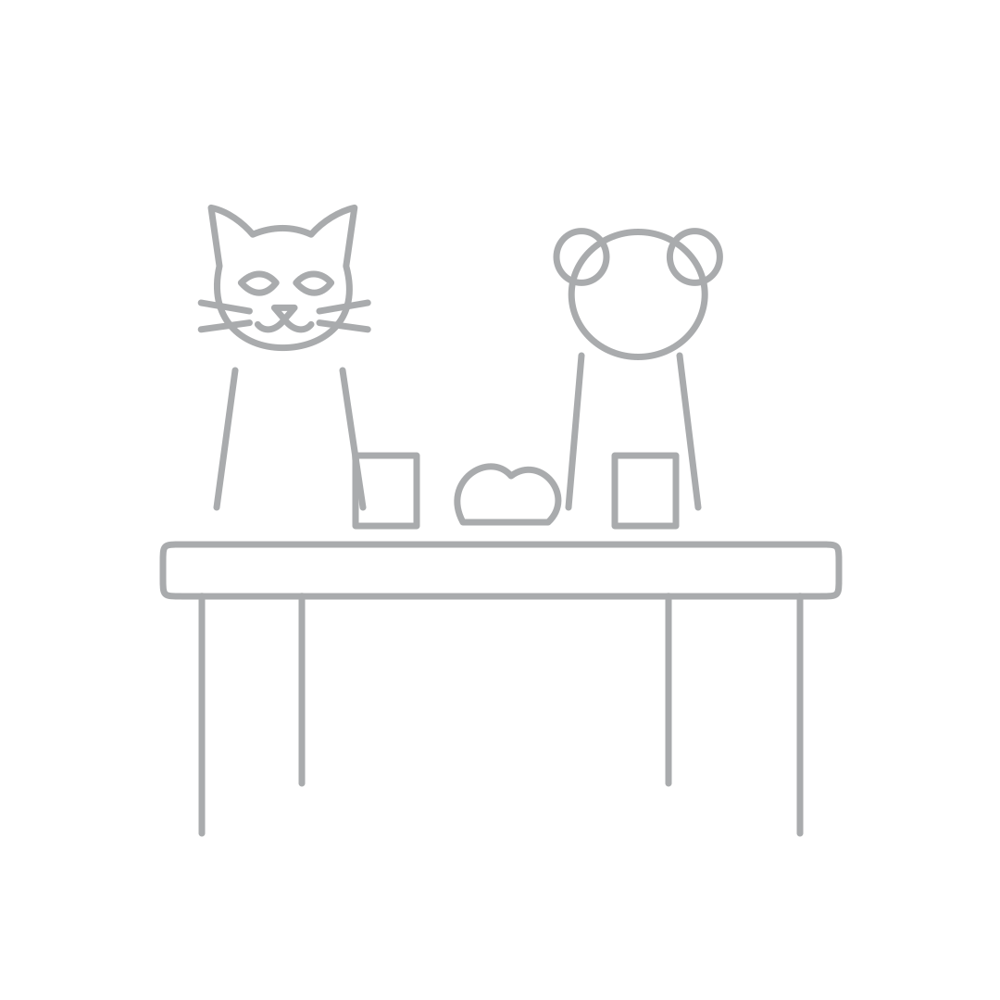
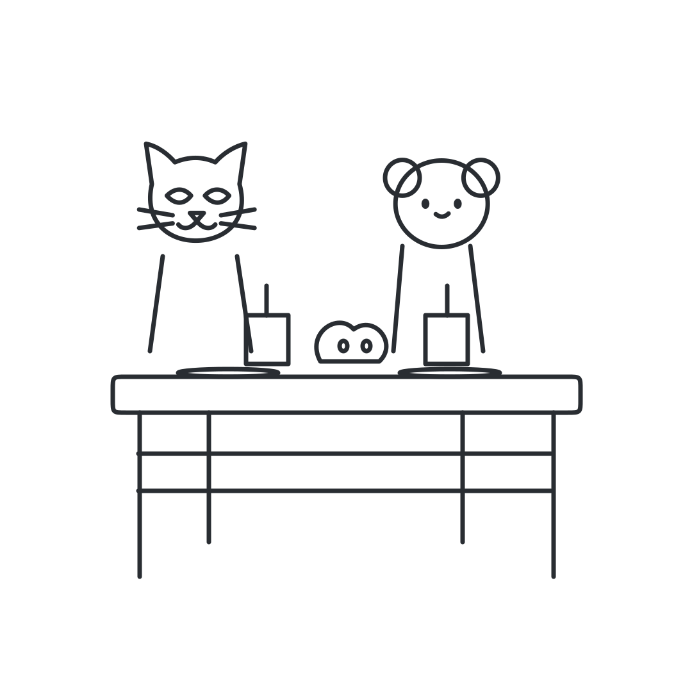

<!doctype html><html lang="pt-BR"><meta charset="utf-8"><meta name="viewport" content="width=device-width"><style>body{font:18px system-ui;background:#edf0f4;color:#20252c;margin:24px}main{max-width:1200px;margin:auto}.grid{display:grid;grid-template-columns:repeat(auto-fit,minmax(210px,1fr));gap:20px}article{background:white;padding:16px;border-radius:20px}img{width:100%;height:auto}.pair{display:grid;grid-template-columns:repeat(auto-fit,minmax(min(100%,340px),1fr));gap:24px}a{color:#303fa0}h3{font-size:18px}</style><main><a href="index.html#J">← Catálogo</a><h1>100. Mesa de lanche dos bichinhos</h1><p>Dois modos • scene • Arte nova: aprovação final pendente</p><div class="pair"><article><h2>Seguir contorno</h2></article><article><h2>Colorir</h2></article></div></main></html>